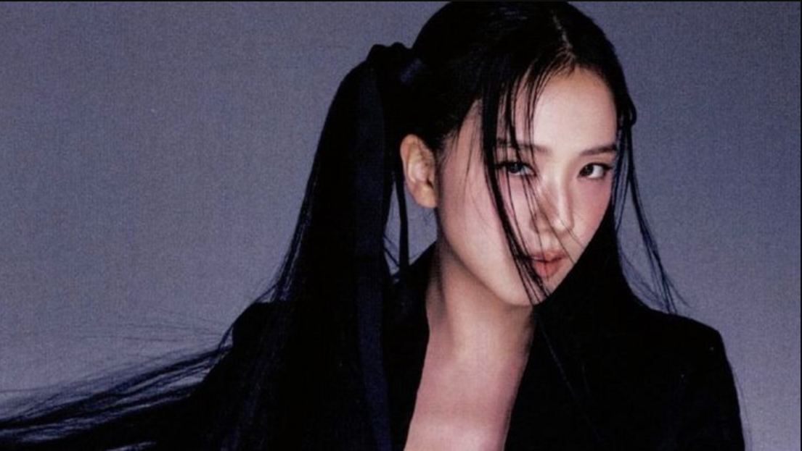
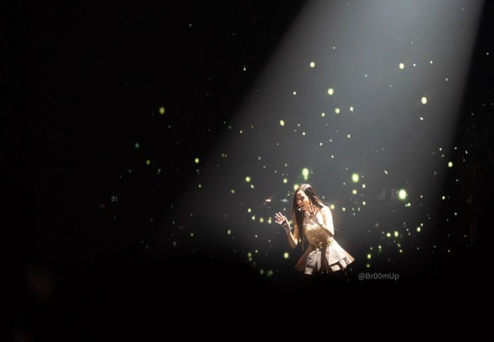
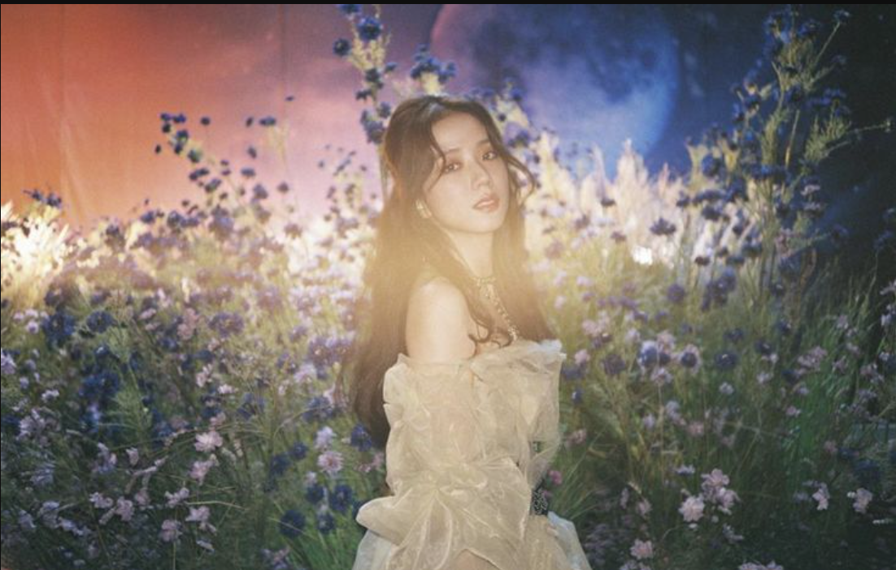

Biografi
Nama lengkap: Kim Ji-soo (김지수)
Nama panggung: Jisoo
Tanggal lahir: 3 Januari 1995
Asal: Seoul, Korea Selatan
Jisoo adalah vokalis dan visual dari BLACKPINK. Ia dikenal karena kecantikannya, kepribadian yang ceria, dan bakat aktingnya. Jisoo memulai debut sebagai aktris dalam drama Snowdrop pada tahun 2021 dan sukses menarik perhatian publik sebagai aktris utama.
Fakta Menarik
- Jisoo adalah member tertua di BLACKPINK.
- Dia debut sebagai aktris dalam drama Snowdrop tahun 2021.
- Pernah muncul di iklan dan video musik sebelum debut dengan BLACKPINK.
- Jisoo sangat disukai karena selera humornya dan sering dijuluki "Mood Maker" grup.
Perjalanan Karier
-
Jisoo bergabung dengan YG Entertainment pada tahun 2011 sebagai trainee. Sebelum debut, ia sering muncul di berbagai iklan dan video musik artis YG seperti Epik High – Spoiler dan Hi Suhyun – I’m Different.
Pada 8 Agustus 2016, Jisoo resmi debut bersama BLACKPINK dengan single album Square One, yang berisi lagu hits Boombayah dan Whistle.
Selain menjadi penyanyi, Jisoo juga meniti karier di dunia akting. Ia memulai debut akting utamanya lewat drama Snowdrop (2021) sebagai Eun Young-ro, dan mendapat banyak pujian berkat kemampuan aktingnya yang natural
Prestasi
- Brand ambassador global Dior sejak 2021.
- Dinobatkan sebagai salah satu visual paling ikonik di K-pop. tahun 2021.
- Memenangkan penghargaan akting di Seoul International Drama Awards 2022./li>
- Merilis debut solo pada 31 Maret 2023 dengan single album ME, menampilkan lagu “FLOWER” dan “All Eyes On Me”. Lagu tersebut meraih rekor penjualan tinggi dan trending global.
Galeri



Media Sosial
📷 Instagram: @sooyaaa__
🎬 YouTube: Jisoo Official (jika tersedia)